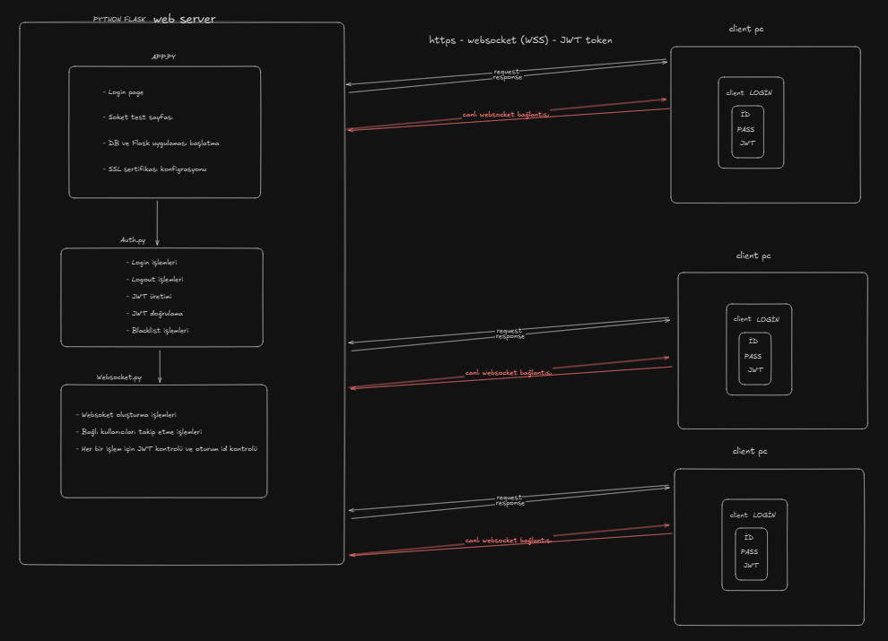

Case Gereksinimleri

+------------------------+ +------------------------+
| | | |
| Client Browser | | Flask Server |
| | | |
| +------------------+ | HTTPS/WSS | +------------------+ |
| | | |<---------->| | | |
| | Frontend | | | | App.py | |
| | - HTML | | | | - Routes | |
| | - JavaScript | | | | - Config | |
| | - CSS | | | | | |
| +------------------+ | | +------------------+ |
| | | | | |
| v | | v |
| +------------------+ | | +------------------+ |
| | | | | | | |
| | WebSocket.js | |<---------->| | WebSocket.py | |
| | - Socket.IO | | Events | | - Socket.IO | |
| | - Connection | | | | - User Tracking | |
| | Management | | | | - Authentication| |
| +------------------+ | | +------------------+ |
| | | | |
| | | v |
| | | +------------------+ |
| | | | | |
| | | | Auth.py | |
| | | | - JWT | |
| | | | - Token Mgmt | |
| | | | - Validation | |
| | | +------------------+ |
| | | | |
| | | v |
| | | +------------------+ |
| | | | | |
| | | | DB.py | |
| | | | - SQLite | |
| | | | - User Model | |
| | | | | |
| | | +------------------+ |
+------------------------+ +------------------------+
Kimlik doğrulama sistemi, hem REST API hem de WebSocket bağlantılarını güvenli hale getirmek için JWT (JSON Web Tokens) kullanır.
JWT_SECRET_KEY = os.environ.get('JWT_SECRET_KEY', ':D')
JWT_EXPIRATION_DELTA = timedelta(hours=24)
BLACKLISTED_TOKENS = set() # İptal edilmiş tokenları takip eder
USER_TOKENS = {} # Kullanıcı adlarını aktif tokenlara eşler
Token Kara Listesi: Çıkış yapılmış tokenların kullanımını engeller, bu şekilde kullanıcı eski tokeni kuullanıp servise erişmesi engellenir.
def is_token_blacklisted(token):
return token in BLACKLISTED_TOKENS
def add_token_to_blacklist(token):
BLACKLISTED_TOKENS.add(token)
return True
Kullanıcı Başına Tek Token Politikası: Yeni giriş yapıldığında eski tokenları geçersiz kılar. Aynı anda birden fazla geçerli oturumun olmaması için eski token blackliste eklenir.
def invalidate_user_tokens(username):
if username in USER_TOKENS:
old_token = USER_TOKENS[username]
if old_token:
add_token_to_blacklist(old_token)
return True
Korumalı Rota Dekoratörü: Dekaratör kullanarak erişilen Endpoint için yetkilendirme kontrolü yapılır bunun için dekaratör algoritmasını seçtim bu şekilde argüman olarak gönderdiğim her türden veriyi ve verileri parse edip işledikten sonra çalışacak.
Yetkisiz Durumunda: Yetkisiz bir işlem durumunda dakoratör fonksiyonu kendi error mekanizmasıı kullanarak error handle edecek.
@token_required
def funciton(current_user):
# data
USER_TOKENS[username] = token
@app.route('/login-token', methods=['POST'])
def login_token():
# Kimlik bilgilerini doğrular ve JWT token döndürür
@app.route('/logout', methods=['POST'])
@token_required
def logout(current_user):
# Tokenı geçersiz kılar
app = create_app() # SQLite yapılandırması ile Flask uygulaması oluşturur
# login sayfası için
@app.route('/', methods=['GET'])
# login sayfasından sonra geçerli tokene sahip kullanıcılara açılan test sayfası.
@app.route('/socket', methods=['GET'])
@token_required
def serve_testpage(current_user):
return send_from_directory('.', 'frontend/html/websockettest.html')
socketio.run(app, host='0.0.0.0', port=5000, debug=True,
certfile=cert_path, keyfile=key_path)
JWT ile kullanıcı doğruluğunu yetkilendirme işlemlerini yapsam da anlık kullanıcı sistemini sürekli güncellemem gerektiği için websocket teknolijisinin uygun ve kolay uygulunabilir olduğunu düşündüm. Hem websocket SİD (oturum id) kullanarak hem de JWT token ile eş zamanlı kontrol yaparak sistemin manüpüle edilmesinin önüne geçtim.
socketio = SocketIO(
app,
cors_allowed_origins=["https://localhost:5000", "https://127.0.0.1:5000"],
cors_credentials=True,
engineio_logger=True,
logger=True,
ping_timeout=120,
ping_interval=25,
async_mode='eventlet',
max_http_buffer_size=1e8,
always_connect=True,
)
connected_users = {} # Kullanıcı adlarını oturum kimliklerine eşler
MAX_CONNECTIONS = 3 # İzin verilen maksimum eşzamanlı bağlantı sayısı
def authenticated_only(f):
@wraps(f)
def wrapped(*args, **kwargs):
# JWT kullanarak WebSocket olaylarını doğrular
return wrapped
Bağlantı: Yeni istemci bağlantılarını yönetir, Handshake kısmı başlar.
@socketio.on('connect')
def handle_connect():
# Yeni bağlantıları işler ve istatistikleri günceller
Kullanıcı Kaydı: WebSocket bağlantısını doğrulanmış kullanıcıyla ilişkilendirir. Doğrulama kısmı başlar ve kullanıcının JTW token kontrolü yapılır. Aynı kullanıcı tekrardan kayıt olmaya çalışırsa kullanıcının önceki oturumu kapatılır ve yenisi açılır.
@socketio.on('register_user')
def register_user(data):
# Kullanıcıyı doğrular ve bağlantı limitlerini yönetir
Bağlantı Kesme: İstemciler bağlantıyı kestiğinde temizlik yapar. Çıkış yapan kullanıcı bağlı kullanıcılar listesinde ise o kullanıcının çıkışı yapılır.
@socketio.on('disconnect')
def handle_disconnect(data=None):
# Kullanıcıyı connected_users'dan kaldırır ve istatistikleri günceller
Kullanıcı Listesi: Çevrimiçi kullanıcı listesi sağlar. Websocket ile bağlı kullanıcılara istedikleri veriyi verir. Bağlı kullanıcı listesini döner.
Örnek:
[09:09:59] ÇEVRİMİÇİ KULLANICILAR: {"users":["user"],"count":1}
[09:09:59] ÇEVRİMİÇİ KULLANICI: 1 kullanıcı aktif.
@socketio.on('get_online_users')
@authenticated_only
def get_online_users():
# Bağlı kullanıcıların listesini döndürür
Ping/Pong: Bağlantı sağlık kontrolü, kullanıcıya belirlenen aralıklarla "hala bağlı mısın" isteği gönderir, client ise bu isteğe pong yanıtıyla "hala bağlıyım" isteği gönderir.
@socketio.on('ping_manual')
def handle_ping():
# Sunucu zaman damgasıyla yanıt verir
Eğer halihazırda Zaten giriş yapıldıysa otomatik yönlendirme yapılır.
// Temel giriş işlevi
function login() {
// Kullanıcıyı doğrular ve JWT token'ı saklar
fetch('https://localhost:5000/login-token', {
method: 'POST',
headers: {'Content-Type': 'application/json'},
body: JSON.stringify({ username, password })
})
.then(response => response.json())
.then(data => {
localStorage.setItem('jwt_token', data.token);
localStorage.setItem('username', data.user.username);
// WebSocket test sayfasına yönlendir
})
}
function connectSocket() {
socket = io(url, {
auth: { token: token },
transports: ["websocket"],
secure: true
});
socket.on("connect", () => {
// Kullanıcıyı token ile kaydet
socket.emit("register_user", {
token: token,
username: username
});
});
// Çeşitli soket olaylarını işle
socket.on("response", (data) => { /* ... */ });
socket.on("user_status", (data) => { /* ... */ });
socket.on("connection_slots", (data) => { /* ... */ });
// vb.
}
# docker-compose.yml
services:
server:
container_name: prodServer
build: .
volumes:
- .:/app
ports:
- "5000:5000"
environment:
- PYTHONUNBUFFERED=1
- FLASK_APP=app.py
- EVENTLET_NO_GREENDNS=YES